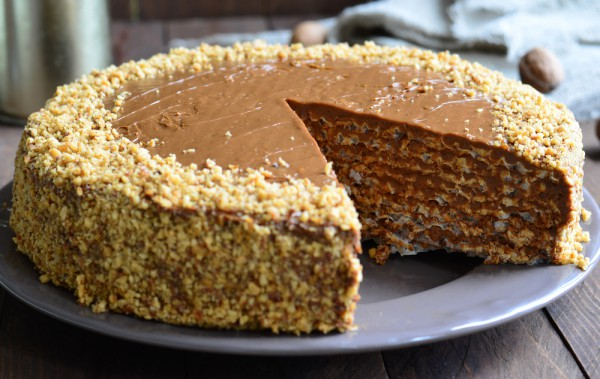
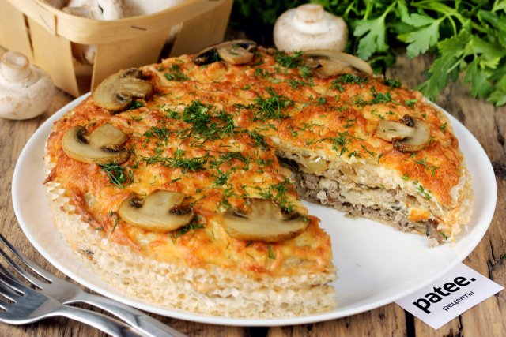
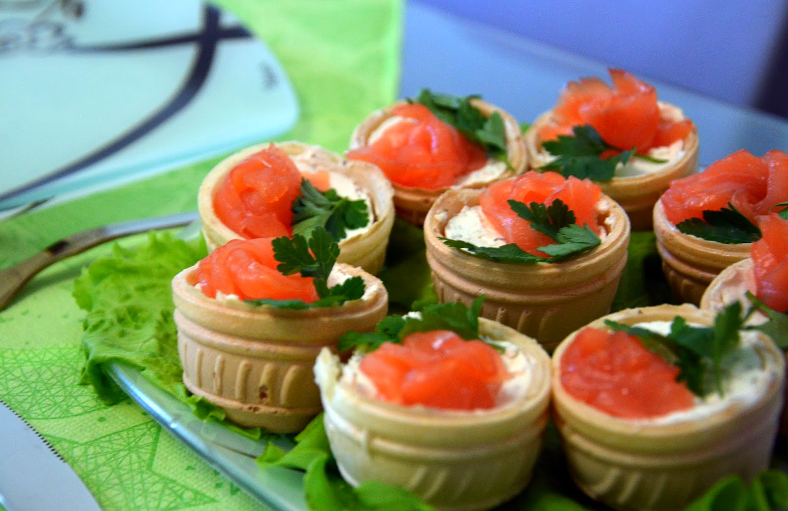
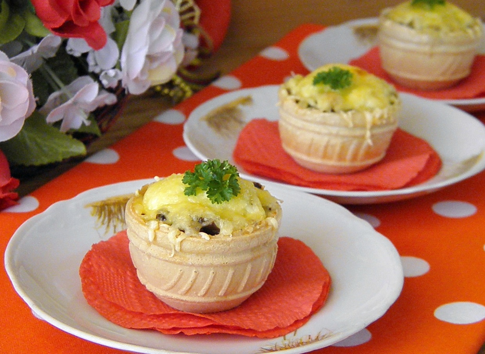

Рецепты
Вафельный торт со сгущенкой и грецкими орехами
- Ингредиенты:
- Вафли 1 упаковка 80г
- вареная сгущенка 1 банка
- сливочное масло 50 г
- грецкие орехи 100-150 г

- Перемешать сгущенку с размягченным сливочным маслом до получения однородной массы.
- Измельчить орехи в блендере или с помощью скалки.
- Собрать торт, смазывая каждый корж сгущенкой и посыпая орехами. Сверху торт также намазать кремом и обсыпать орехами.
- Дать вафельному торту пропитаться в течение нескольких часов.
Пирог из вафельных коржей с мясом и грибами
- Ингредиенты:
- Свинина 300 г
- Куриное филе 200 г
- Шампиньон 250 г
- Сыр твердый 100 г
- Лук репчатый 140 г
- Яйцо куриное 2 шт
- Вафельный корж 80 г
- Майонез 3 ст. л.
- Подсолнечное масло 70 мл
- Укроп 15 г
- Соль по вкусу
- Перец черный молотый по вкусу

- Мясо, курицу и свинину, нарезаем небольшими кусочками.
- Промываем грибы под холодной проточной водой. Лук чистим. Все режем не большими кубиками.
- Солим добавляем немного любимых приправ. Обжариваем до размягчения грибов, но следить, что бы не подгорели.
- Затем добавляем фарш и жарим еще минут 5-7. При необходимости посолить. Затем берем коржи.Выкладываем фарш.Кладем равномерным слоем начинку и накрываем вторым пластом. Выпекать 15-20 минут при 150-160 градусах.
Тарталетки с лососем и сыром
- Ингредиенты:
- Тарталетки 21г
- Лосось 100г
- Майонез 100 г
- Сыр твердый 100 г
- Морковь сырая 1шт
- Яйцо куриное 2 шт
- Зелень

- Порубите зелень и смешайте ее с тертыми яйцами и сыром
- Заправьте все майонезом и выложите в корзиночки
- Присыпьте тертой морковкой, предварительно ее сварив
- Выложите по кусочку лосося
Жульен в тарталетках
- Ингредиенты:
- Готовые тарталетки 30г
- Куриное филе 400 г
- жирные сливки — 200 г
- лук репчатый — 100 г
- грибы (лесные предпочтительнее) — 50 г
- Сыр твердый 100 г

- Курицу нарежьте на мелкие кусочки, выложите на раскаленную сковородку с растительным маслом, слегка обжарьте.
- Пока жарите курица — мелко нашинкуйте лук, отправьте его обжариваться вместе с курицей.
- Грибы, нарезанные кубиком, отправьте на сковородку к курице и луку через пару минут.
- Когда и лук, и курица, и грибы приобретут золотистый колер — добавьте к ним сливки, немного воды, соль, специи. Тушите до испарения влаги. Обычно это занимает около 15 минут. Если соус вышел очень жидким — в 50 мл сливок разведите ложку сметаны и влейте к курице и грибам. Протушите еще минут 5.
- Параллельно натрите на мелкой терке сыр.
- Готовую начинку слегка остудите. Выложите по тарталеткам столовой ложкой, а сверху присыпьте сыром.
- Запекайте в духовке тарталетки с жульеном до того момента, пока сыр не расплавится. Это около 10 минут. Выньте из духовки, слегка остудите и подавайте на стол. Можно украсить зеленью.